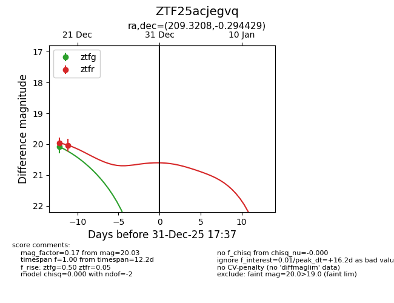
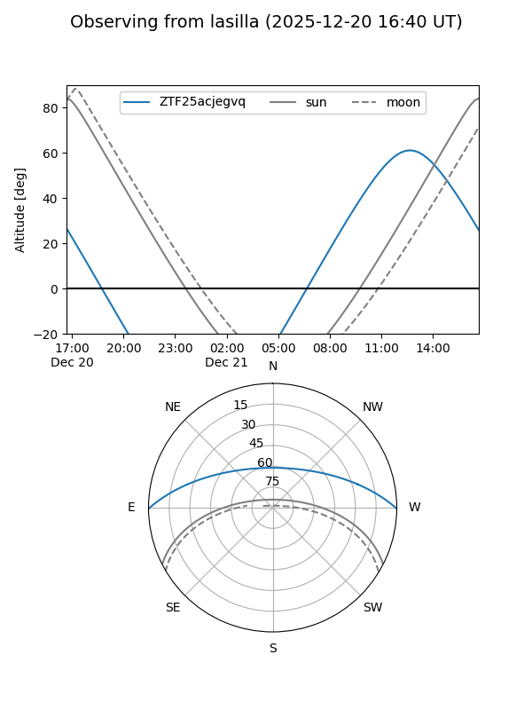
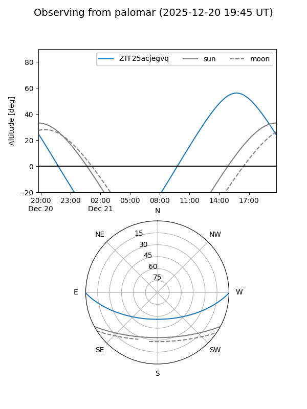
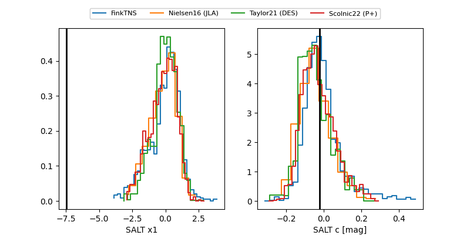

ZTF25acjegvq
Target ZTF25acjegvq at 2025-12-19 13:42
Aliases and brokers:
FINK: fink-portal.org/ZTF25acjegvq
Lasair: lasair-ztf.lsst.ac.uk/objects/ZTF25acjegvq
ALeRCE: alerce.online/object/ZTF25acjegvq
alt names
ZTF25acjegvq (ztf,fink_ztf)
Coordinates:
equatorial (ra, dec) = 209.3208,-0.29443
equatorial (HMS+DMS) = 13:57:16.98,-00:17:39.95
galactic (l, b) = (335.6038,+58.33743)
Flags:
Photometry:
last ztfg=20.08, ztfr=19.96
1 ztfg, 1 ztfr detections
Lightcurve

Visibility


Additional plots
